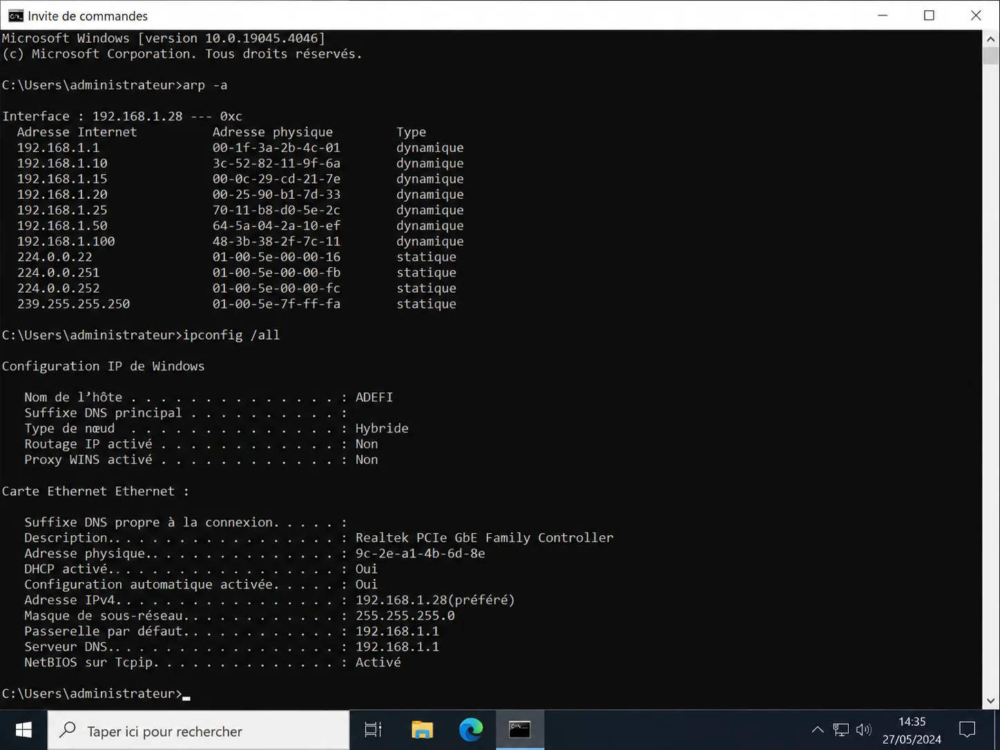
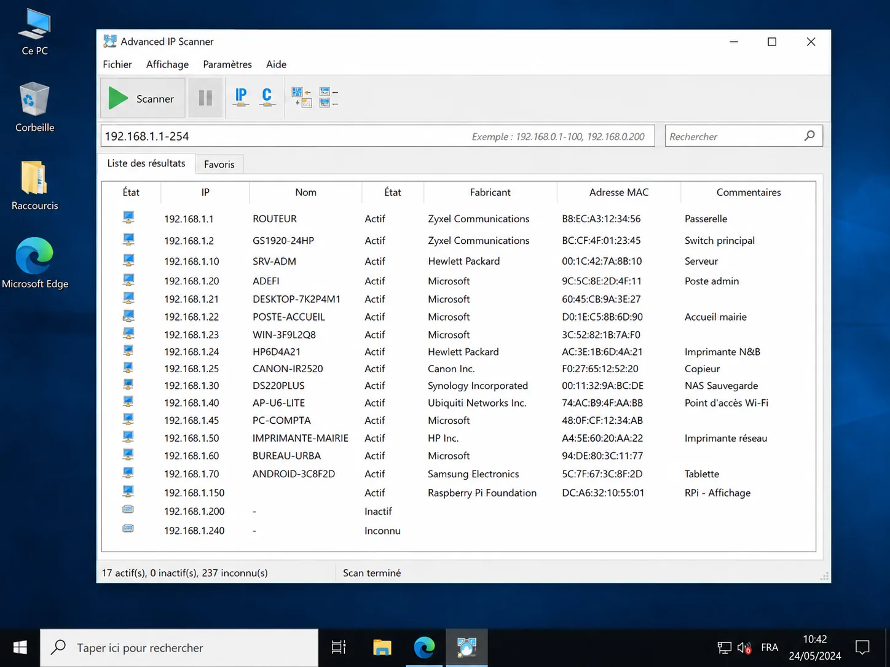
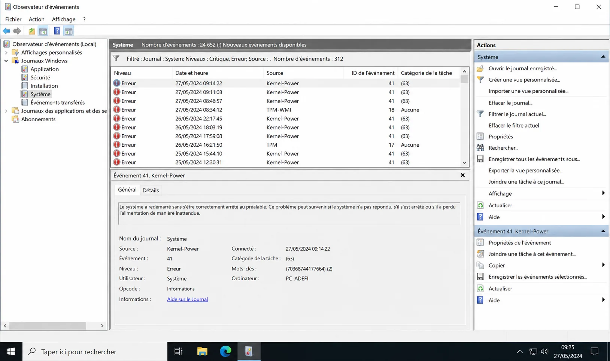
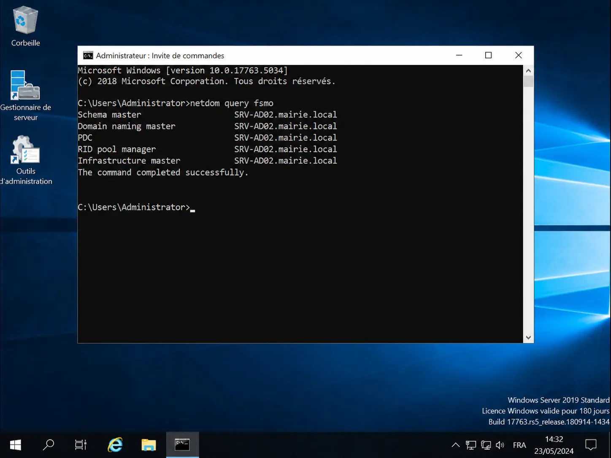
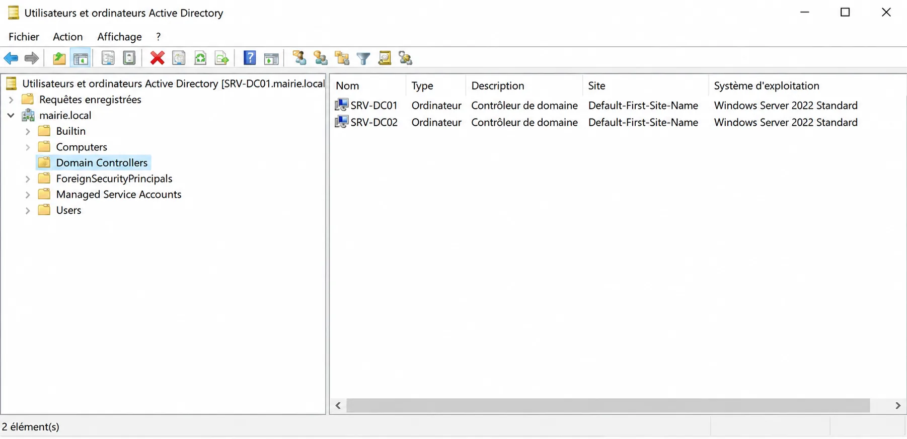

Compte-rendu de Stage Technicien Systèmes & Réseaux
Six semaines au sein d'Adefi Informatique : interventions terrain, administration systèmes, déploiement réseau et gestion de serveurs en conditions réelles.
Adefi Informatique est une société de services informatiques spécialisée dans l'assistance aux entreprises et aux collectivités locales. Elle intervient sur l'ensemble du parc matériel de ses clients : postes de travail, serveurs, équipements réseau (switchs, routeurs, pare-feux) et solutions NAS.
L'entreprise assure également le support, la maintenance préventive et curative, ainsi que l'administration des infrastructures Windows Server / Active Directory de ses clients.
Informations
Détail
Entreprise
Adefi Informatique
Tuteur
M. Cédric Duval
Durée
6 semaines
Secteur
Prestataire informatique
Activité principale
Support, administration syst. & réseaux
Objectifs
Missions attendues
1
Découverte du métier
Comprendre le quotidien d'un technicien informatique et d'un administrateur systèmes/réseaux en prestataire de services.
2
Interventions terrain
Intervenir directement chez les clients professionnels pour du dépannage matériel, des installations et des configurations réseau.
3
Diagnostic et résolution
Acquérir des réflexes de diagnostic rapide et de résolution d'incidents sur postes, serveurs et équipements réseau.
4
Projets d'envergure
Participer à des projets majeurs : migration de serveurs, déploiement réseau complet, administration Active Directory.
Faits marquants
Trois interventions qui résument ce stage
Le détail semaine par semaine se trouve plus bas. Voici d'abord les trois situations qui m'ont
le plus appris, présentées par le problème rencontré, ce que j'ai fait et ce que ça a donné.
1
Migration d'un serveur d'entreprise sans coupure de service
Situation
Un serveur d'entreprise devait être remplacé, alors que les utilisateurs travaillaient dessus toute la journée. Une bascule ratée, c'est une entreprise à l'arrêt.
Ce que j'ai fait
Préparation des machines virtuelles, reprise du DNS et des passerelles, migration d'Active Directory et des données, puis transfert des rôles FSMO vers le nouveau serveur. La bascule a été réalisée de nuit, hors présence des utilisateurs.
Résultat
Aucune interruption de service côté utilisateurs, Active Directory répliqué sur le nouveau serveur et rôles FSMO validés.
2
Panne réseau totale dans une commune
Situation
Plus aucun accès réseau sur le site : postes du domaine et imprimantes hors service, services municipaux bloqués.
Ce que j'ai fait
Diagnostic méthodique en remontant la chaîne : vérification du câblage et du brassage d'abord, puis reconfiguration des commutateurs et des imprimantes réseau.
Résultat
Service rétabli en moins d'une journée, postes du domaine et impression de nouveau opérationnels.
3
Récupération de données sur un poste qui ne démarrait plus
Situation
Système d'exploitation corrompu sur le poste d'un client, avec des données non sauvegardées à récupérer.
Ce que j'ai fait
Plutôt que d'insister sur un système instable, démarrage sur une machine virtuelle Fedora et montage du disque du poste depuis cet environnement sain.
Résultat
Fichiers du client récupérés intégralement, sans jamais avoir eu à démarrer le système défaillant.
Semaine 1
Découverte & premières interventions
Activités principales
Remplacement de disques et mise en place d'un RAID 1 sur un serveur.
Élaboration de devis pour renouvellement de postes obsolètes.
Accueil clientèle & diagnostic rapide.
Migration d'un poste Windows 10 vers Ubuntu.
Configuration d'un NAS Synology avec RAID SHR.
Installation complète de Windows 11 (pilotes, nettoyage, restauration de données).
Difficulté rencontrée : Performances insuffisantes d'un disque dur mécanique → diagnostic via CrystalDiskInfo → remplacement par SSD et remontée du RAID.
Ce que j'ai appris
Bases du diagnostic matériel (disques, RAM, alimentation).
Découverte des environnements Linux (Ubuntu) et Synology DSM.
Importance du RAID et des sauvegardes pour les entreprises.
Preuves techniques
NAS Synology — Interface DSM (RAID SHR)
Interface DSM du NAS Synology : pool de stockage SHR actif avec 5 disques affichés en statut « Sain ».
Configuration d'un pare-feu matériel, d'un switch Zyxel et d'un routeur.
Déploiement d'une infrastructure réseau complète dans un bâtiment professionnel.
Déménagement de la baie informatique et brassage complet des câbles.
Réparation d'un PC instable (diagnostic alimentation).
Compétences acquises : Mise en place de VLANs, adresses IP fixes, gestion des conflits réseau (ports téléphonie vs data), techniques de test matériel (alimentation).
Preuves techniques
Switch Zyxel — Configuration VLAN
Interface d'administration du switch Zyxel montrant les VLANs configurés pour séparer les flux téléphonie (VOIX), données (Data) et management.
Récupération de données d'un PC bloqué via machine virtuelle Fedora.
Réinitialisation complète d'un téléphone Samsung.
Recherche et installation manuelle de pilotes inconnus.
Suppression d'un mot de passe Windows via outil bootable.
Prise en main à distance d'un serveur avec TeamViewer.
Montage d'un PC Gamer (2 400 €) avec watercooling.
Intervention en entreprise sur un NAS défaillant.
Technique clé : Utilisation d'une VM Fedora pour monter le disque du PC bloqué et accéder aux données sans démarrer le système d'exploitation corrompu.
Ce que j'ai appris
Analyse des droits Windows et contournement sécurisé via outil bootable.
Utilisation d'une VM Linux pour le dépannage hors-système.
Montage avancé de PC haute performance (watercooling, gestion des câbles).
Diagnostic alimentation, RAM, stockage.
Preuves techniques
VM Fedora — Récupération de données
Machine virtuelle Fedora lancée sous VirtualBox avec le disque du PC client monté et ses fichiers accessibles dans le gestionnaire de fichiers.
Montage complet du PC haute performance : radiateur, bloc pompe CPU, gestion des câbles et test de démarrage.
Semaine 4
Interventions en mairie & commandes réseau
Activités principales
Installation de postes en mairie & partage réseau.
Utilisation des commandes arp -a, ipconfig /all, scan réseau.
Remplacement d'un serveur NAS défaillant.
Corrections d'erreurs BSOD (Blue Screen of Death) sur postes Windows.
Participation à un salon professionnel (nouveautés Asus & équipements réseau).
Réorganisation d'un poste informatique et tri de matériel.
Ce que j'ai perfectionné
Commandes réseau et analyse ARP pour identifier les équipements.
Dépannage Windows 10/11 (pilotes manquants, erreurs BSOD).
Diagnostic d'imprimantes et périphériques réseau.
Preuves techniques
Commandes réseau — arp -a & ipconfig
Ces commandes permettent d'identifier rapidement les appareils présents sur le réseau et de vérifier la configuration IP des postes en mairie.

CMD Windows · arp -a (table ARP) + ipconfig /all (config IP complète)
Scan réseau — Inventaire des appareils
Outil de scan réseau utilisé pour identifier tous les équipements actifs sur le réseau de la mairie avant d'intervenir.

Advanced IP Scanner · Équipements détectés : routeur Zyxel, NAS Synology, postes Windows, imprimantes
Semaine 5
RAID, journaux système & dépannage réseau
Activités principales
Réparation d'un ancien disque formaté en FAT32.
Gestion d'un serveur NAS (accès à distance).
Configuration d'un serveur RAID 10 (4 disques, performance + redondance).
Analyse des journaux Windows — erreurs Power Kernel et TPM.
Intervention sur panne réseau totale dans une commune.
Reconfiguration complète des switchs et imprimantes réseau.
Cas concret : Panne réseau totale dans une commune → diagnostic câblage → reconfiguration switch → remise en service des imprimantes réseau et des postes AD en moins d'une journée.
Ce que j'ai appris
RAID matériel et logiciel (RAID 1, RAID SHR, RAID 10).
Lecture et analyse de journaux système pour diagnostiquer des arrêts brutaux.
Dépannage réseau complet en conditions réelles.
Preuves techniques
Observateur d'événements — Erreurs Power Kernel
Les journaux Windows montrent les erreurs d'arrêt brutal (Kernel-Power ID 41) utilisées pour diagnostiquer les problèmes d'alimentation et de stabilité serveur.

Observateur d'événements · Journaux Système · Erreurs Kernel-Power ID 41 (arrêt brutal inattendu)
RAID 10 — Gestionnaire de disques
Configuration du serveur RAID 10 : 4 disques en miroir de bandes, offrant à la fois performance et tolérance aux pannes.
Mise en maintenance d'un serveur (déplacement de baie).
Ajout d'imprimantes dans le domaine Active Directory.
Supervision de serveurs distants & analyse des erreurs TPM.
Intervention mairie (police + école) pour résoudre des problèmes réseau.
Grand projet : transfert complet d'un serveur d'entreprise
Configuration des machines virtuelles (VM)
DNS, passerelles, paramètres réseau
Migration Active Directory + données
Transfert des rôles FSMO vers le nouveau serveur
Travail de nuit pour la bascule (zéro downtime)
Point fort : Migration réalisée de nuit pour ne pas interrompre les utilisateurs — transfert des rôles FSMO validé, Active Directory répliqué sur le nouveau serveur avec zéro coupure de service.
Ce que j'ai appris
Organisation d'une migration serveur réelle avec contrainte de continuité de service.
Gestion de l'Active Directory à grande échelle (OUs, GPO, utilisateurs).
Transfert des rôles FSMO entre contrôleurs de domaine.
Preuves techniques
Transfert des rôles FSMO — netdom query fsmo
La commande netdom query fsmo confirme que les cinq rôles FSMO ont bien été transférés sur le nouveau contrôleur de domaine après la migration.

CMD Windows Server · netdom query fsmo · 5 rôles FSMO transférés sur SRV-AD02.mairie.local
Active Directory — Les deux contrôleurs de domaine
La console ADUC montrant l'ancien et le nouveau contrôleur de domaine présents dans le domaine pendant la migration.

Active Directory · Domain Controllers · SRV-DC1 et SRV-DC2 (Windows Server 2022 Standard)
Synthèse
Compétences acquises sur le stage
Domaine
Compétence
Niveau atteint
Administration serveur
Windows Server, Active Directory, migrations, FSMO
Intermédiaire
Stockage
RAID 1, RAID SHR, RAID 10, NAS Synology, gestion disques
Windows 10/11, Ubuntu, Fedora (VM), Synology DSM, TeamViewer
Intermédiaire
Référentiel BTS SIO
Correspondance avec les compétences du BTS
Ce stage couvre les blocs de compétences suivants du référentiel BTS SIO option SISR :
B1.1 – Gérer le patrimoine informatique
B1.2 – Répondre aux incidents et aux demandes d'assistance
B1.5 – Mettre à disposition des utilisateurs un service informatique
B2.2 – Installer l'infrastructure réseau
B2.3 – Exploiter l'infrastructure réseau
B2.4 – Garantir la disponibilité et l'intégrité des données
Conclusion
Bilan du stage
Ce stage m'a permis d'acquérir une vision complète et réaliste du métier de technicien et d'administrateur systèmes/réseaux en prestataire de services. La variété des interventions — du montage matériel à la migration de serveurs d'entreprise en passant par le dépannage réseau en collectivité — m'a confronté à des situations professionnelles authentiques que les cours seuls ne peuvent simuler.
Point marquant : La migration nocturne du serveur d'entreprise avec transfert des rôles FSMO. Cette mission, réalisée avec une contrainte de zéro interruption de service, m'a démontré l'importance de la planification, de la rigueur et de la gestion du stress en conditions réelles.
Je retiens également la confiance accordée par le tuteur M. Cédric Duval, qui m'a rapidement intégré aux interventions clients et m'a laissé une autonomie croissante au fil des semaines. Ce stage a confirmé et renforcé mon intérêt pour l'administration systèmes et réseaux.